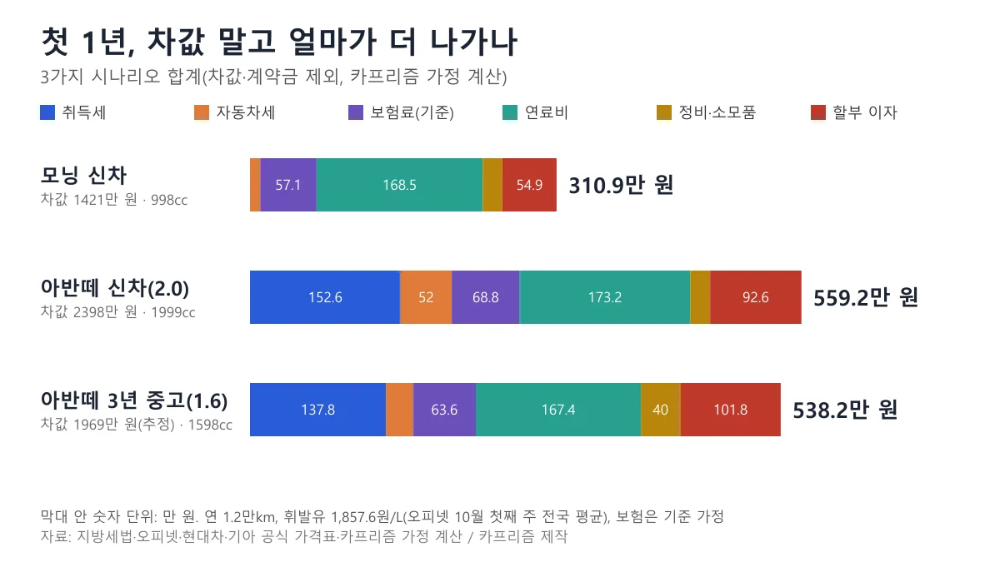
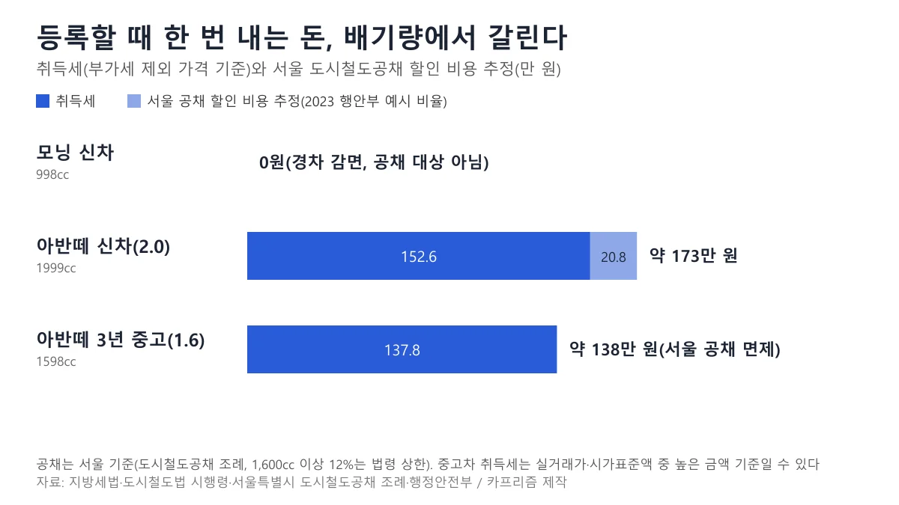
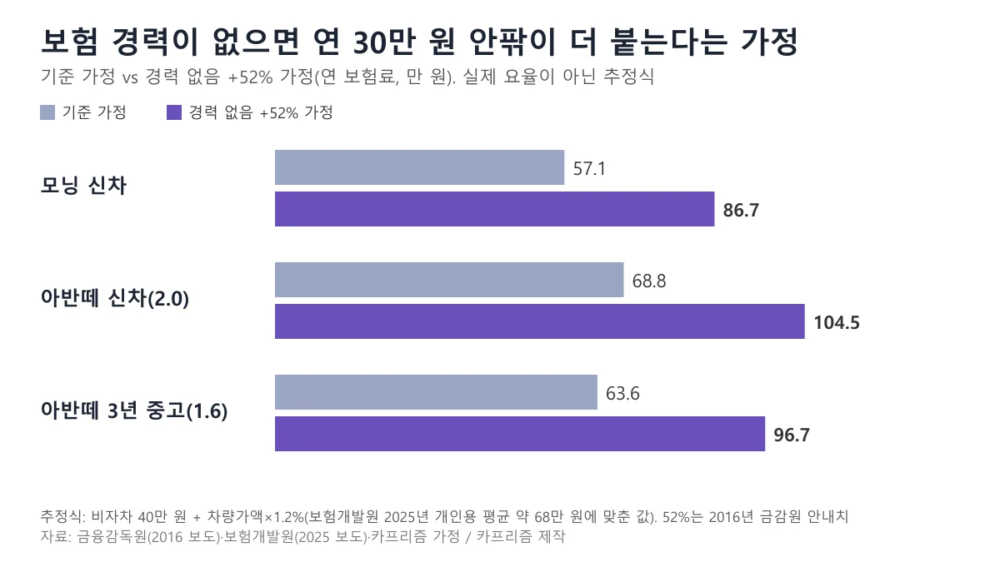
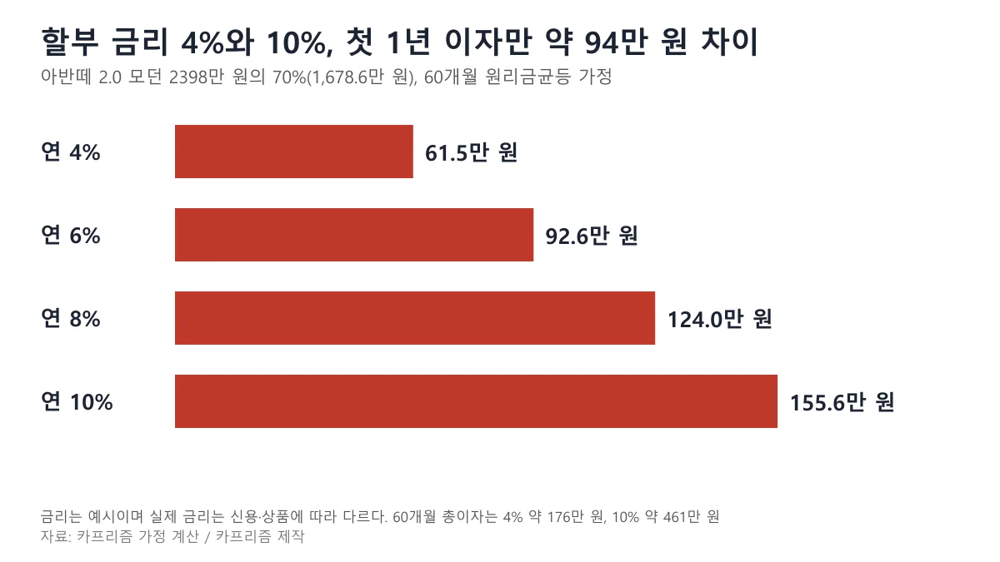
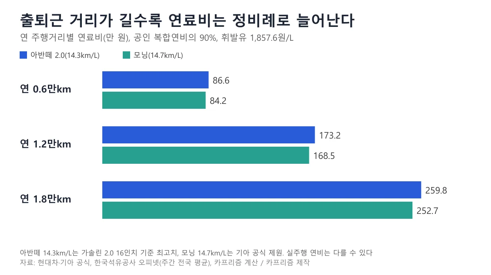
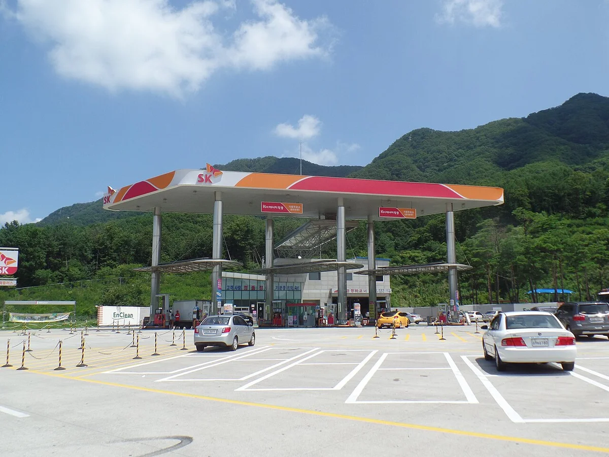
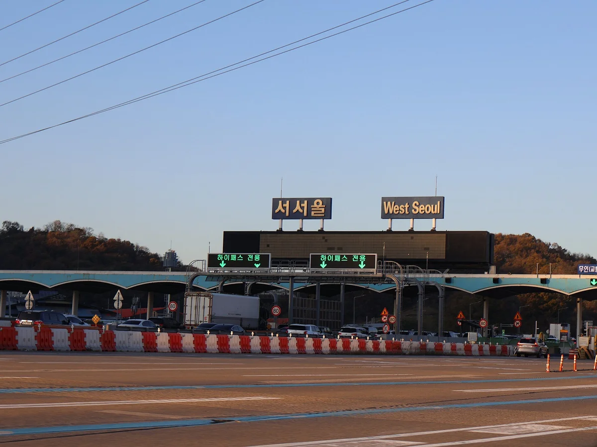
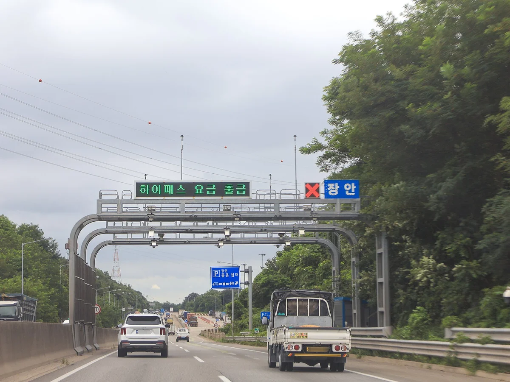
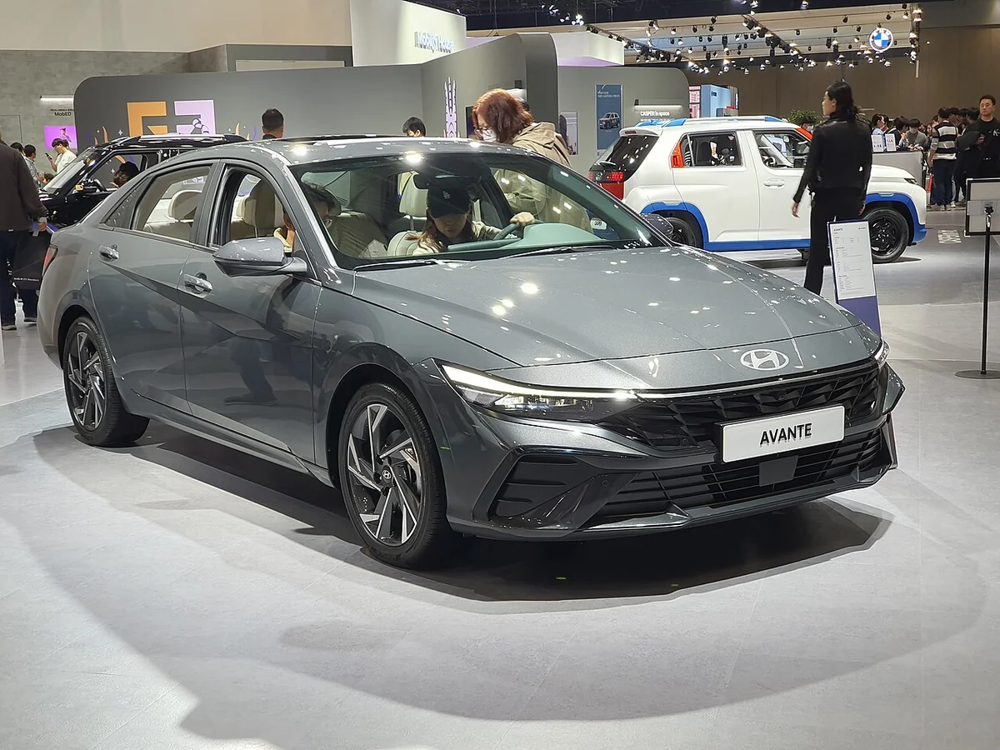

▲ 2026년 8월 계약을 시작한 8세대 디 올 뉴 아반떼(현대 모터스튜디오 고양 전시차, Wikimedia 기재상 2026년 9월 30일 촬영). 사진 속 차의 트림은 확정하지 않는다 ⓒ Damian B Oh / Wikimedia Commons (CC BY-SA 4.0)
"첫차 가격표는 2,398만 원인데, 1년 뒤 통장에서는 얼마가 더 빠져나가 있을까?" 사회초년생이 첫차를 알아볼 때 가장 먼저 보는 숫자는 차값이지만, 계약서에 도장을 찍은 뒤에 나가는 돈은 차값 밖에서 훨씬 많이 생긴다. 취득세, 보험료, 할부 이자, 연료비가 한꺼번에 오기 때문이다.
이 글은 아반떼 신차, 모닝 신차, 3년 된 아반떼 중고 세 경우를 놓고 "첫 1년 동안 차값 말고 얼마가 더 드는가"를 항목별로 계산한다. 법령과 공식 가격표로 확인되는 숫자는 출처와 기준일을 달고, 공개 통계가 없는 보험료와 정비비는 가정이라고 밝힌 계산식으로만 제시한다. 끝에는 계약 전에 판매자와 보험사에 물어볼 7가지 질문과 실행 순서 체크리스트를 붙였다.
먼저 짚을 점이 있다. 현대차 공식 가격표(2026년 10월 1일 기준)에 올라 있는 신차 아반떼는 8세대 가솔린 2.0이고 모던 트림이 2,398만 원이다. 예전 글에서 흔히 쓰던 7세대 1.6 가솔린보다 배기량이 커서 자동차세와 공채 부담이 달라진다. 이 글은 신차 아반떼를 8세대 2.0 모던으로 계산했고, 3년 중고는 7세대 1.6으로 두었다.
1. 첫 1년 숨은 비용 한눈에 — 차값 말고 얼마가 더 나가나
아래 표는 같은 사람이 세 가지 선택을 했을 때 차값과 계약금을 뺀 첫 12개월 지출이다. 취득세는 등록할 때 한 번, 나머지는 12개월 동안 나가는 돈을 합쳤다. 계산에 쓴 가정은 표 아래에 모두 적었다.
| 항목 | 모닝 신차 | 아반떼 8세대 2.0 신차 | 아반떼 1.6 3년 중고 |
|---|---|---|---|
| 차값(참고) | 1,421 | 2,398 | 1,969(추정) |
| 취득세 | 0(경차 감면) | 152.6 | 137.8 |
| 자동차세(연) | 10.4 | 52.0 | 27.6 |
| 보험료(연) | 57.1 | 68.8 | 63.6 |
| 연료비(연 1.2만km) | 168.5 | 173.2 | 167.4 |
| 정비·소모품 | 20.0 | 20.0 | 40.0 |
| 할부 이자(차값 70%, 60개월) | 54.9(연 6%) | 92.6(연 6%) | 101.8(연 8%) |
| 합계 | 약 310.9 | 약 559.2 | 약 538.2 |
| 월 환산 | 약 25.9 | 약 46.6 | 약 44.9 |
| 차값 대비 | 21.9% | 23.3% | 27.3% |
| 보험 경력 없음 가정(+52%) 합계 | 약 340.6 | 약 595.0 | 약 571.3 |
| (참고) 서울 공채 할인 비용, 합계 미포함 | 해당 없음 | 약 21(추정) | 0(1,600cc 미만 면제) |

▲ 첫 1년 차값 외 비용을 항목별로 쌓은 도표(표의 항목별 반올림값을 그대로 더했다). 카프리즘 제작, 계산 가정은 본문 표 아래 참조
📍 이 계산의 가정 (표를 읽기 전에)
- 차값: 아반떼 8세대 가솔린 2.0 모던 2,398만 원은 현대차 공식 가격표(2026년 10월 1일 기준)이고, 모닝 트렌디(승용) 1,421만 원은 기아 공식 가격표(같은 기준일)다. 3년 중고 1,969만 원은 카프리즘 5년 총비용 기사의 중고 시세 추정이다. 이 값은 7세대 1.6 기준이며 이번에 시세를 다시 확인하지 못했다
- 연료비: 연 1.2만km, 공인 복합연비의 90%, 휘발유 1,857.6원/L. 한국석유공사 오피넷이 집계한 10월 첫째 주(4~8일) 전국 주유소 평균 판매가다. 연비는 모닝 14.7km/L(기아 공식 제원), 아반떼 2.0 14.3km/L(현대차 발표 복합연비 최고치, 16인치 기준), 3년 중고 1.6은 14.8km/L(기존 기사 값, 연식별로 다를 수 있다)
- 보험료: 비자차 40만 원 + 차량가액×1.2%라는 카프리즘 추정식이다. 보험개발원이 발표한 2025년 개인용 자동차보험 평균 약 68만 원(언론 보도)에 맞춘 값으로, 보험사 요율이 아니며 실제 견적과 다를 수 있다
- 정비·소모품: 신차 연 20만 원, 3년 중고 연 40만 원(카프리즘 5년 총비용 기사의 가정)
- 할부: 차값의 70%를 60개월 원리금균등으로 갚는다고 가정. 금리는 신차 6%, 중고 8%는 예시이며 실제 금리는 신용과 상품에 따라 다르다
- 빠진 것: 주차비, 통행료, 번호판 대금·인지·증지·대행료, 세차, 블랙박스·틴팅 같은 용품, 감가(되팔 때 손실)는 포함하지 않았다. 모닝의 경차 유류세 환급(최대 연 30만 원)도 조건과 기한이 있어 합계에서 뺐다(5장)
표에서 눈에 띄는 것은 3년 중고가 신차보다 첫 1년 비용이 그다지 싸지 않다는 점이다. 차값은 약 429만 원 낮지만 금리가 높고 정비비가 늘어, 차값 외 비용은 아반떼 신차와 약 21만 원 차이로 좁혀진다. 다만 중고가 이만큼 붙는 데는 1.6(1,598cc)이어서 자동차세가 연 약 24만 원 낮은 영향도 들어 있다.
모닝과 아반떼의 차이를 가르는 것도 차값만이 아니다. 아반떼 2.0은 모닝보다 취득세 약 153만 원, 자동차세 약 42만 원, 보험료 약 12만 원이 더 든다. 이 결과는 가정에 민감하므로 5년 단위 비교는 신차 vs 3년 중고 5년 총비용 기사에서 따로 계산했다.
2. 계약하고 등록할 때 한 번 내는 돈 — 취득세와 공채
첫 번째 숨은 비용은 차를 등록하는 순간 나온다. 비영업용 승용차의 취득세율은 7%, 경형자동차는 4%이다(지방세법 제12조 제1항 제2호 가목, 국가법령정보센터 2026년 7월 1일 시행본). 이 세율을 어디에 곱하느냐에서 견적서와 실제 금액이 갈린다.
신차의 과세표준은 부가가치세를 뺀 가격이다. 지방세법 시행령 제18조 제2항 제4호는 부가가치세를 사실상취득가격에 포함하지 않는 비용으로 적고, 같은 조 제1항 단서는 개인(법인이 아닌 자)이 취득할 때 할부 이자 상당액을 취득가격에서 뺀다고 정한다. 가격표 금액은 부가세 10%가 들어 있으니 1.1로 나눈 값에 세율을 곱한다.
| 구분 | 계산식 | 취득세 |
|---|---|---|
| 아반떼 2.0 신차 2,398만 원 | 2,398만 ÷ 1.1 = 약 2,180.0만 원 × 7% | 약 152.6만 원 |
| 모닝 신차 1,421만 원 | 1,421만 ÷ 1.1 = 약 1,291.8만 원 × 4% = 약 51.7만 원, 경차 감면(75만 원까지 면제) | 0원 |
| 3년 중고 1,969만 원(추정) | 1,969만 × 7%(단순 계산) | 약 137.8만 원 |
경차 감면의 근거는 지방세특례제한법 제67조 제1항이다. 경형자동차를 비영업용 승용차로 취득하면 취득세액이 75만 원 이하일 때 전액 면제하고, 75만 원을 넘으면 75만 원을 공제한다. 이 규정은 조문상 2027년 12월 31일 취득분까지이고, 취득일부터 1년 안에 영업용으로 쓰면 감면액을 추징한다. 모닝처럼 세액이 51.7만 원이면 전액 면제다. 한도와 5년 합계는 경차 혜택 5년 합계 기사에서 풀어 두었다.
중고차는 실거래가와 지자체 시가표준액 중 높은 금액이 과세표준이 될 수 있어 단순 계산과 다를 수 있다(취득세·개소세 계산 기사). 전기차 감면 등 다른 감면은 이 표에 넣지 않았다. 지방세특례제한법 바로가기

▲ 기아 모닝(JA 부분변경). 경형 규격이어서 취득세 감면 대상이다(연식·트림은 확정하지 않는다) ⓒ Damian B Oh / Wikimedia Commons (CC BY-SA 4.0)
공채(도시철도·지역개발채권)는 배기량부터 본다
등록할 때 채권을 사야 하는지는 지자체와 배기량에 따라 다르다. 매입 대상과 요율은 시·도 조례가 정하되, 도시철도채권은 도시철도법 시행령 별표 2의 범위 안이어야 한다. 이 별표는 비영업용 승용차 신규등록의 매입 금액을 취득세 과세표준의 소형(1,000cc 이상 1,600cc 미만) 9%, 중형(1,600cc 이상 2,000cc 미만) 12%, 대형(2,000cc 이상) 20%까지로 정하고(소형은 길이·너비·높이 조건이 함께 붙는다), 경형자동차는 대상에서 뺀다.
서울은 이 상한을 쓰되 예외가 있다. 서울특별시 도시철도공채 조례 제3조 제1항 제4호는 배기량 1,000cc 이상 1,600cc 미만 비영업용 승용차의 신규·이전등록 매입의무를 2028년 12월 31일까지 면제한다(2026년 1월 1일 개정 시행). 그래서 서울에서는 아반떼 1.6(1,598cc) 중고와 경차는 공채를 사지 않지만, 1,999cc인 아반떼 8세대 2.0은 매입 대상이다.
| 구분 | 매입 의무 | 계산 |
|---|---|---|
| 아반떼 2.0 신차(1,999cc) | 대상(중형 12%) | 과세표준 약 2,180만 원 × 12% = 약 261.6만 원 매입. 곧바로 되팔 때 할인 손실은 약 21만 원 안팎으로 추정 |
| 3년 중고 1.6(1,598cc) | 서울 조례로 면제 | 0원 |
| 모닝(998cc, 경형) | 대상 아님 | 0원 |
할인 손실 약 21만 원은 공식 값이 아니다. 행정안전부가 2023년 안내에서 서울에서 3,000만 원짜리 1,999cc 차를 살 때 매입액을 차량가액의 12%(327만 원), 금리 인상 후 할인매도 비용을 약 26만 원으로 든 예시가 있어, 이 비율(매입액의 약 8%)을 2,398만 원 차에 단순 환산한 값이다. 실제 할인율은 등록일 기준으로 매일 바뀐다고 현대차도 안내한다. 경기도 등 다른 지역의 현행 요율은 이번에 확인하지 못했다. 행정안전부 채권 매입 안내 바로가기 서울 도시철도공채 조례 바로가기

▲ 등록할 때 한 번 내는 취득세와 서울 공채 할인 비용 추정. 공채 할인 비용은 2023년 행안부 예시 비율을 단순 환산한 값이다. 카프리즘 제작
번호판 대금, 인지·증지, 등록 대행료, 탁송비는 작은 금액이지만 견적서에서 따로 줄을 내지 않으면 눈에 안 띈다. 일부 지자체 민원 안내(경기 파주시, 게재 연도 미표기)에는 신규등록 때 인지 3,000원, 증지 2,000원, 번호판 발급 수수료 1만 2,000원(페인트식)이 적혀 있다. 이 금액은 지자체별로 다를 수 있고 대행료·탁송비는 업체가 정하므로 위 표에서는 뺐다.
견적서에 "등록 비용 일체"로 묶여 있다면 취득세·공채·번호판·대행료를 줄 단위로 나눠 달라고 요청하자. 등록 전에 예상 비용은 정부 자동차민원 포털에서 조회할 수 있다. 취득세는 취득일부터 60일 안에 신고·납부해야 하며(지방세법 제20조 제1항), 기한을 넘기면 가산세가 붙는다. 자동차365 바로가기 국가법령정보센터 지방세법 바로가기
3. 보험료 — 처음 가입하는 사람에게만 있는 구조
두 번째 숨은 비용은 보험료가 차보다 '나'에게서 갈린다는 점이다. 처음 가입하면 할인할증 등급이 11Z에서 시작하고, 무사고로 1년 보내면 1등급씩 오른다(보험료 할증 구조 기사). 첫해에는 이 할인이 쌓여 있지 않다는 뜻이다.
2016년 9월 금융감독원은 가입경력 인정 대상을 1명에서 2명으로 넓히면서, 운전경력이 1년 미만이면 신규 가입 보험료가 최대 52%까지 가산되고 경력 1~2년이면 20%, 2~3년이면 6%로 줄어든다고 소개했다는 보도가 있다. 같은 보도는 가족 등 다른 사람의 가입경력을 인정받을 수 있다고 알렸다. 10년 전 자료이므로 현재 기준과 같다고 단정할 수 없고, 가입 전에 보험사에 인정 가능 여부를 묻는 것이 맞다.
평균이 얼마인지도 궁금할 것이다. 보도에 따르면 보험개발원의 '2025년 자동차보험 가입현황 분석'에서 개인용 자동차보험의 대당 평균 보험료는 약 68만 원이었다. 다만 이는 경력자를 포함한 평균이어서 신규 가입자 평균이 아니고, 신규 가입자만의 공개 평균은 이번에 찾지 못했다.
아래는 52%를 가정으로 얹어 본 시나리오다. 공식 요율표가 아니라 카프리즘 추정식에 가정을 곱한 값이다.
| 구분 | 기준 가정 | 경력 없음 +52% 가정 | 차이 |
|---|---|---|---|
| 모닝 신차 | 57.1만 원 | 86.7만 원 | 약 29.7만 원 |
| 아반떼 2.0 신차 | 68.8만 원 | 104.5만 원 | 약 35.8만 원 |
| 아반떼 1.6 3년 중고 | 63.6만 원 | 96.7만 원 | 약 33.1만 원 |

▲ 보험 경력 유무에 따른 연 보험료 가정 비교. 실제 보험사 요율이 아니라 카프리즘 추정식 기반이다(표 값은 반올림). 카프리즘 제작
"만 26세 이상 특약"을 쓸 때 알아 둘 것
연령 한정 특약은 운전자 나이를 제한해 보험료를 낮추는 방식이다. 다만 설정한 연령 미만이 운전하다 사고가 나면 보상이 제한될 수 있다(갱신·할인 특약 기사). 구간 구분과 할인율은 보험사마다 달라 이번에 공식 수치를 확인하지 못했다. 본인 나이에 맞는 구간으로만 가입하고, 가끔 차를 빌려 운전할 가족이나 지인이 있다면 운전자 범위도 함께 정하자(운전자 범위 기사).
견적은 같은 조건으로 여러 회사를 한 번에 비교하는 것이 가장 빠르다. 손해보험협회 등이 운영하는 비교 사이트에서 연령·경력·차량을 같게 넣고 담보도 같게 맞춰 보자. 보험다모아 바로가기 차종별 보험료 차이는 세단 5종 보험료 비교 기사에 있다.
4. 할부·리스 금리 — 첫 1년 이자는 차값과 금리가 함께 만든다
세 번째 비용은 빌려 쓰는 값이다. 아반떼 2.0 신차에서 차값의 70%(1,678.6만 원)를 60개월 원리금균등으로 갚는다고 하면 금리별 숫자는 아래와 같다.
| 연 금리 | 월 납입액 | 첫 1년 이자 | 60개월 총이자 |
|---|---|---|---|
| 4% | 약 30.9만 원 | 약 61.5만 원 | 약 176.2만 원 |
| 6% | 약 32.5만 원 | 약 92.6만 원 | 약 268.5만 원 |
| 8% | 약 34.0만 원 | 약 124.0만 원 | 약 363.6만 원 |
| 10% | 약 35.7만 원 | 약 155.6만 원 | 약 461.3만 원 |

▲ 금리별 첫 1년 이자. 금리 4%와 10%의 차이는 첫 1년 이자만 약 94만 원이다. 카프리즘 제작(가정 계산)
월 납입액은 금리가 4%에서 10%로 올라도 약 4.8만 원 차이지만, 5년 총이자는 약 285만 원 벌어진다. 월 납입액만 보면 차이가 작아 보여서 놓치기 쉽다. 이 계산의 금리는 예시일 뿐이고, 현재 시장 금리와 개인 조건에 따른 실제 금리는 여신금융협회 공시로 직접 확인하지 못했다. 공시 페이지가 조건을 넣어 조회하는 방식이라 이번에는 금리 값을 읽지 못했다.
실제 상품은 여신금융협회의 자동차할부 비교공시에서 조건을 넣어 비교할 수 있다. 여신금융협회 비교공시 바로가기 할부와 리스, 장기렌트의 구조 차이는 리스·할부·현금 비교 기사에서 다뤘다. 계약 전에 총 이자, 중도상환수수료, 수수료가 금리에 이미 반영되어 있는지를 한 장짜리 표로 받아 두자.
5. 매달·매년 나가는 돈 — 연료, 자동차세, 정비, 주차, 통행료, 검사
등록 비용을 지나면 이제 매달 새는 돈이 시작된다. 이 중 가장 큰 항목은 연료비다. 연 1.2만km를 달리고 휘발유 1,857.6원/L를 가정하면 아반떼 2.0은 연 약 173만 원(월 약 14.4만 원), 모닝은 약 168.5만 원이다. 두 차의 공인 복합연비(14.3km/L, 14.7km/L)가 비슷해서다.
휘발유 가격은 한국석유공사 오피넷 집계로 10월 첫째 주(4~8일) 전국 평균 1,857.6원이고, 서울 약 1,904원, 대구 약 1,830원처럼 지역 차이가 있다(언론이 전한 주간 집계). 아반떼 2.0의 14.3km/L는 현대차가 발표한 최고 복합연비이고 휠 사이즈가 커지면 낮아질 수 있어, 실제 연료비는 이보다 늘 수 있다. 오피넷 바로가기

▲ 연 주행거리별 연료비(공인 복합연비의 90% 가정). 출퇴근 거리가 길수록 연료비가 정비례로 늘어난다. 카프리즘 제작
| 항목 | 확인된 기준 | 독자가 할 일 |
|---|---|---|
| 자동차세 | 승용 비영업용: 1,000cc 이하 cc당 80원, 1,600cc 이하 140원, 1,600cc 초과 200원 + 지방교육세 30%(지방세법 제127조, 2026년 7월 시행본). 차령 3년 이상은 기분세액에서 매년 5%p씩 경감(같은 조 제2항) | 1,999cc 연 52.0만 원, 1,598cc 연 29.1만 원(3년차 27.6만 원), 998cc 연 10.4만 원. 신규등록한 해에는 등록일이 속한 기분 세액을 일할 계산해 부과한다(제130조 제1항). 매년 1월 연납 신청은 연납 할인 기사 |
| 경차 유류세 환급 | 조세특례제한법 제111조의2와 시행령 제112조의2: 1,000cc 미만, 길이 3.6m·너비 1.6m·높이 2.0m 이하 승용·승합차 소유자(본인과 동거가족 승용차 합계 1대 등)에게 휘발유·경유 리터당 250원의 개별소비세를 환급, 연 한도 30만 원. 조문상 적용 기한은 2026년 12월 31일 | 유류구매카드를 발급받아 결제해야 한다. 모닝 연 약 907L 기준 약 22.7만 원이 되지만, 2027년 이후는 연장 여부를 확인해야 해 표 합계에서 뺐다 |
| 정비·소모품 | 신차 연 20만 원, 3~4년차 40만 원은 카프리즘 가정(공식 통계 아님) | 엔진오일·타이어·브레이크패드 교환 주기는 제조사 보증·정비 안내서에서 확인 |
| 주차 | 경차는 공영주차장 50% 감면(카프리즘 경차 혜택 기사, 이번에 공식 확인은 하지 못했다) | 집·직장 주차비를 월 고정비로 먼저 적는다. 이 글 표에는 넣지 않았다 |
| 통행료 | 경차 고속도로 통행료 50% 할인(카프리즘 경차 혜택 기사, 이번에 공식 확인은 하지 못했다) | 자주 가는 길의 통행료를 하이패스 기준으로 확인한다. 미납은 하이패스 미납 확인 기사 |
| 정기검사 | 자동차관리법 시행규칙 별표 15의2(2026년 10월 2일 시행본)는 비사업용 승용차의 검사 유효기간을 2년으로 하고, 신조차로서 신규검사를 받은 것으로 보는 자동차의 최초 유효기간은 5년으로 적는다 | 신차는 최초 검사가 등록 5년 뒤에 온다. 중고차는 등록일을 기준으로 첫 검사가 1~2년 안에 올 수 있으니 만료일을 확인한다 |

▲ 고속도로 휴게소 주유소(2016년 촬영). 같은 날에도 지역·주유소마다 휘발유 가격이 다르다 ⓒ Jhcbs1019 / Wikimedia Commons (CC BY-SA 4.0)
정기검사는 만료 기간 안에 받지 않으면 과태료가 붙는다. 수검 기간과 비용은 정기검사·종합검사 기사에서 정리했고, 한국교통안전공단에서 만료일과 검사소를 조회할 수 있다. 한국교통안전공단 바로가기
통행료는 이 글 표에 넣지 않았지만 출퇴근에 고속도로를 쓴다면 연료비 다음으로 큰 고정비가 된다. 하이패스 단말기는 차로에 서지 않고 요금을 내는 방식이어서, 장거리를 자주 달린다면 계약 때 함께 챙길 만하다.

▲ 서해안고속도로 서서울 요금소의 하이패스 전용 차로 안내(2023년 11월 촬영) ⓒ LandAndTree / Wikimedia Commons (CC BY 4.0)

▲ 평택시흥고속도로 장안 요금소 구간의 하이패스 안내 전광 표지(2024년 7월 촬영) ⓒ LandAndTree / Wikimedia Commons (CC0)
6. 신차냐 중고냐 — 첫차에서 갈리는 기준
1장 표가 보여 주듯 중고가 무조건 싸지는 않다. 아래 기준으로 나눠 보면 선택이 쉬워진다.
| 기준 | 신차가 유리한 쪽 | 중고가 유리한 쪽 |
|---|---|---|
| 초기 현금 | 할부를 길게 써도 월 부담을 감당할 수 있다 | 차값이 낮아 선수금·할부 원금이 준다 |
| 금리 | 신차 할부 금리가 중고보다 낮다고 가정(카프리즘 5년 기사) | 현금 비중이 커서 이자 부담이 작다 |
| 정비·보증 | 제조사 보증 기간 안이라 정비비 변동이 작다 | 보증이 끝난 차는 정비비를 더 잡아야 한다 |
| 배기량·세금 | 8세대 아반떼는 2.0뿐이라 자동차세 연 52만 원, 서울 공채 대상 | 1.6 중고는 자동차세 연 약 28만 원, 서울 공채 면제 |
| 보험 | 차량가액이 높아 자차 보험료가 늘 수 있다 | 차량가액이 낮아 자차 부담이 작다 |
| 감가 | 첫해 감가는 크다(연식별 평균 매물가는 5년 기사에 있다) | 첫해 감가가 작지만 매각가가 낮아 최종 차이는 줄 수 있다 |
| 확인할 것 | 프로모션·개소세 기준일, 출고 대기 | 성능점검기록부, 사고·침수·주행거리 이력 |

▲ 3년 중고 후보가 되는 7세대 아반떼(CN7 부분변경 모델, 전시장 촬영). 연식·트림은 확정하지 않는다 ⓒ Damian B Oh / Wikimedia Commons (CC BY-SA 4.0)
중고를 살 때는 성능점검기록부 읽는 법부터 익히자. 중고차 성능점검기록부 기사에 항목별 확인법이 있다. 차종을 아직 못 정했다면 첫차 추천 TOP 5와 경차 3종 구매 가이드가 후보를 줄여 준다. 신형 아반떼의 크기와 사양은 8세대 아반떼 공개 기사에서 볼 수 있다. 이 글의 모닝 1,421만 원은 7월 추천 기사(1,395만 원)와 가격 기준일이 달라 숫자가 다르다.
7. 계약 전 7가지 질문과 실행 순서
숫자를 알았으면 이제 판매자와 보험사에 물어볼 질문으로 바꿀 차례다. 아래 7가지를 견적서 옆에 적어 두고 답을 받자.
- 이 견적서의 총액에 취득세·공채 할인 비용·번호판·대행료가 들어 있나요, 따로 내나요? 줄 단위로 나눠 달라고 요청한다. 1,600cc 이상이면 공채 매입 대상인지도 묻는다.
- 할부 금리는 실제 연 몇 %이고, 총 이자와 중도상환수수료는 얼마인가요? 수수료가 금리에 이미 반영됐는지도 묻는다.
- 내 보험은 얼마이고, 가족의 가입경력을 인정받을 수 있나요? 계약 전에 같은 조건으로 두세 곳 견적을 받는다.
- 내 연 주행거리에서 월 연료비는 얼마인가요? 출퇴근 거리를 기준으로 5장 도표에서 확인한다.
- 집과 직장의 월 주차비와 자주 가는 길의 통행료를 합치면 얼마인가요? 이 글 표에는 없는 고정비다.
- 이 가격은 어느 날짜, 어느 개별소비세율 기준인가요? 프로모션과 출고 대기도 같이 확인한다.
- 몇 년 탈 건가요, 되팔 때 시세는 어떤가요? 5년 기사의 감가 계산을 참고한다.
✅ 첫차 계약 실행 순서 체크리스트
- 계약 4주 전: 연 주행거리, 월 주차비, 통행료를 적고 월 총예산을 정한다(1장 표 기준으로 차값의 약 22~27%를 첫 1년 추가 비용으로 잡아 본다)
- 계약 3주 전: 보험다모아로 같은 조건 견적을 받고, 가입경력 인정 가능 여부를 보험사에 묻는다
- 계약 2주 전: 여신금융협회 비교공시와 금융사 견적으로 할부 금리를 비교한다
- 계약 직전: 위 7가지 질문의 답을 받아 견적서에 적는다. 취득세 감면 대상(경차 등)은 자동 적용인지 확인한다
- 출고·등록 후: 취득세 60일 납부 기한, 보험 개시일, 정기검사 만료일을 달력에 넣는다. 경차라면 유류구매카드 발급도 알아본다
- 1월: 자동차세 연납 신청 여부를 정한다
8. 이 글이 확인하지 못한 것과 한계
- 보험료: 보험개발원이나 보험사의 공식 신규 가입자 평균 보험료와 만 26세 이상 특약 할인율은 공식 자료로 확인하지 못했다. 개인용 평균 약 68만 원은 언론 보도로만 확인했다. 위 보험 숫자는 카프리즘 추정식에 2016년 금융감독원 보도의 52%를 얹은 가정이다.
- 할부 금리: 여신금융협회 공시는 조건 조회형이라 현재 금리를 읽지 못했다. 4~10%는 예시 범위일 뿐 시장 금리 전망이 아니다.
- 아반떼 가격: 현대차 공식 가격표(2026년 10월 1일 기준)의 8세대 가솔린 2.0 모던 2,398만 원을 썼다. 개소세 기준과 프로모션에 따라 달라지고, 하이브리드(모던 3,042만 원부터, 세제 혜택 적용 전)는 계산하지 않았다.
- 공채: 서울 조례와 법령 상한은 확인했지만 경기도 등 다른 지역의 현행 요율과 면제 조건, 실제 할인율은 확인하지 못했다. 할인 손실 21만 원은 2023년 행안부 예시 비율을 환산한 추정이다.
- 번호판·인지·증지·대행료: 일부 지자체 민원 안내에서 소액만 확인했고, 업체별 대행료·탁송비는 확인하지 못했다.
- 정기검사: 신조차 최초 5년은 법령 별표 기준이다. 기존 카프리즘 정기검사 기사의 "신차 4년"과 다르므로 적용 시점은 한국교통안전공단에서 확인하는 것이 안전하다.
- 연료·환급: 연료 가격은 오피넷 주간 전국 평균을 썼고, 정비비는 가정이다. 경차 유류세 환급은 조문상 2026년 12월 31일까지이며, 이후 연장 여부와 경차 주차·통행료 할인의 공식 근거는 이번에 확인하지 못했다. 감가·용품은 계산하지 않았다.
9. 요약
첫 1년 동안 차값 말고 드는 돈은 2026년 10월 17일 기준 가정 계산으로 모닝 신차(1,421만 원) 약 311만 원, 아반떼 8세대 2.0 신차(2,398만 원) 약 559만 원, 3년 된 아반떼 1.6 중고(1,969만 원 추정) 약 538만 원이다. 차값 대비로는 약 22%~27%이고, 월 환산하면 약 25.9만~46.6만 원이다.
취득세는 비영업용 승용 7%(경차 4%, 75만 원까지 면제)를 부가세 제외 가격에 곱하며, 아반떼는 약 153만 원, 모닝은 0원이다. 서울에서는 1,600cc 미만이 공채 면제라 2.0 신차만 매입 대상이다. 신규 가입 보험은 경력이 없다고 가정하면 연 30만~36만 원이 더 붙을 수 있고, 할부 금리 4%와 10%는 아반떼 기준 첫 1년 이자가 약 94만 원 차이 난다.
계약 전에는 견적서 항목 분리, 실제 연 금리와 수수료, 보험 경력 인정 여부, 월 연료비·주차비·통행료, 가격 기준일과 개소세율, 보유 기간을 묻는 7가지 질문을 하자. 보험·정비·할부 금리는 가정이므로 보험다모아와 여신금융협회 공시에서 직접 견적을 받아야 한다.
📚 함께 읽으면 좋은 글